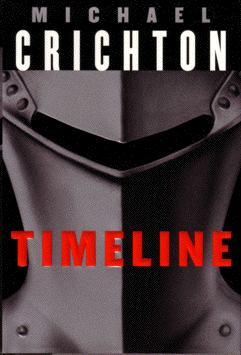

Timelineby Michael Crichton
publisher: Random House
Fiction, 444 pages | 
(book cover art, Copyright © 1999 Michael Crichton)
|
Return to the Book MenuPrevious|Next
Description:
An archeological team is unearthing the ruins of a riverside castle in France when their lead professor is called back to Arizona to pacify the sponsors. What his students discover in his absence leads them on a rescue mission that will make them all better acquainted with the original castle than they might ever have dreamed.... (The 2003 movie is based on this novel.)
Recommended for: time travellers, historians, and adventure-lovers.
Did-you-read questions:
Deadline: February 1, 2005.
These should be easy questions, but you should have the questions ready and keep an eye out during your reading. Each question should be answered with 1-2 sentences.
Note: these questions are not probably not the most important part of the book! Your essay will not have to cover these questions!
- What message did the professor leave that Elsie discovered?
- What are "transcription errors"?
- Who was supposed to have the key to the secret passage between LaRoque and Castelgard
- What did Deckard change his name to in the 14th century?
- Who did Andre marry and how many children did they have?
Report Questions:Deadline: Peer Review Session on February 8, 2005; paper due February 10, 2005.
You should write a 3 - 4 page essay on one of the following questions. Your essay should include examples and references to the book, unless otherwise specified. Page number references are sufficient for citing material from the primary book. If you use outside materials, cite your sources in full. If you would rather write on a different topic, you may, but clear it with Mr. Howe or Ms. Sullivan first.
- In the book, the archeologists made a lot of guesses and assumptions about the 1300s, both about the people and about the local area. When they went back, they found that it was a very confusing place and a lot of their guesses were incorrect. Discuss several areas in which the people and the area were different from what they expected. Do you think historians generally make these same mistakes or is this an unusual case? Are errors like these inherent in archeology and history or do you think their assumptions are usually closer to the truth?
- How were the book and movie similar and different? Which did you prefer? Why?
- Talk about how Chris was developed throughout the book. How did he change? How did you feel about him early in the book? Later in the book? What do you think caused him to change?
- In both Jurassic Park and Timeline, Michael Chrichton deals with scientists who experiment with technology without fully considering the consequences. Doniger's chilling speech at the conclusion of the book makes insinuations about the problems facing a society that offers scientific breakthroughs every day. Discuss some of the ramifications of this meddling. You may also want to comment on some current world events in which scientists may or may not be trying to go "too fast" without considering the consequences.
Graphic and Presentation:
Deadline: February 21 - March 3, 2005.You will give a 10 minute presentation on both of the following:
- Convince your peers that they should (or should not) read this book. (This may include a brief summary of the book.) Give examples of what was cool or worthwhile in the book, and what you got out of it (or didn't).
- Describe a (realistic) science idea that you learned about in this book, citing information from at least 2 external sources (other than the dictionary). If you would like help choosing or understanding an idea from your book, you are invited to come talk to Mr. Howe or Ms. Sullivan.
Note: This presentation should not be just a reading of your paper!Along with this presentation, you should have a graphic that will go with it. A Power Point presentation is recommended, but if you have a special idea for a something else, such as a model, an original video presentation, or a well done drawing/ painting/ sculpture/ etc., you may do so, provided it involves a similar level of effort and polish. Speak to Mr. Howe or Ms. Sullivan first if you are considering an alternate graphic format to the Power Point.
Return to the Book MenuPrevious|Next